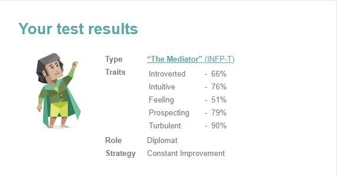

Further Information
Ideal Job
Job Link
Job Description
In this position I would be developing, updating and deploying new version of the company’s cloud service and optimizing it for all users. This is appealing to me as I constantly have a new task to complete and changing my specific focus on what I’m doing will allow me to not get bored or drained repeating the same thing repetitively, which would lead me to resenting having to go into work every day.
Position Requirements
For this specific job they require 3+ years of experience using either DevOps Engineer or Cloud Engineer, 2+ of previous work in development, A bachelor’s in computer science or related field, In depth knowledge of scripting using multiple programs and languages, good communication skills and capable of working in a team.
How will I meet these Requirements?
As of current I fulfill none of these criteria for the job. However, I can achieve getting this job if I finish this current bachelor, I am in then use that degree to enter an entry level job in cloud computing. From here I can gain hands on experience in the field and learn how to function in a working environment. Using this entry level job, I can apply for higher level jobs using my now previous experience and eventually after 3 years in the industry I hopefully meet all the requirements for this senior level positions.
Tests
Briggs Myer's Test
The results of this test show that I tend to question myself quite a bit, I am not very talkative or out going, a creative thinker and accepting of ideas. Being a more creative thinker and having a more open mind can allow for me to better listen to the people in my team and help them to expand on their ideas and concepts. It also allows me to contribute a possible new view on topic. Although I would not do well in a leadership role as I would be a bit of a push over and second guess every decision I make. Also being rather closed off could cause me not to be heard or voice my real opinions from fear on confrontation. When forming a team, I should ensure I am comfortable around so I am more willing to talk and get involved, furthermore the people in my team should most likely fit a more leadership type role and propel our team forward.
Learning Style Test
This test showed that I am more of an Auditory learner meaning that I learn best when I am getting auditorial stimulation and hearing things explained or told to me. In a team setting this means I work best when verbally communicating with others therefore it would be best if my team conversed more in calls rather than text channels.
Leadership Type Test
My leadership style was Frontline leader, from this you can infer that all my actions would have emotional weight and that I ensure everyone’s feelings are kept intact. I give off an authentic and genuine presence that is accommodating to others. However, I can try to be the people pleaser too much and compromise productivity, pass the budget or exceed deadlines. If I was to work in a team I feel I would also need a second more stern and deadline focused leader to co-lead with as they would provide more direct and keeps the project on track while I can keep the team together emotionally and help out where needed.